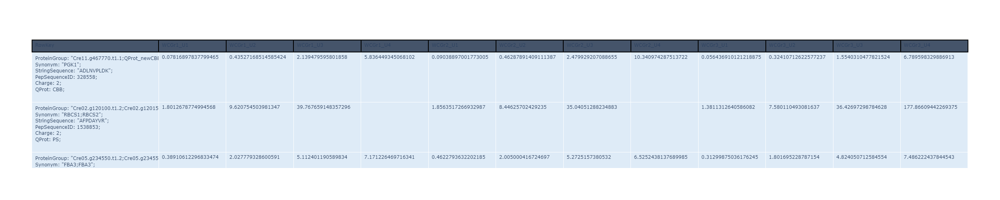
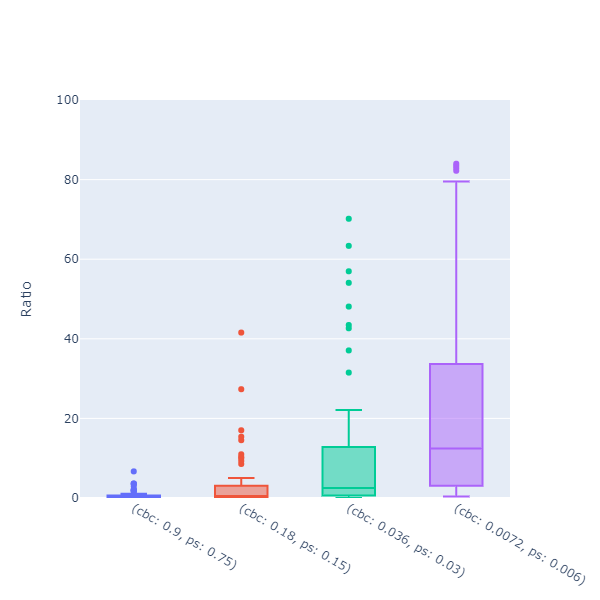
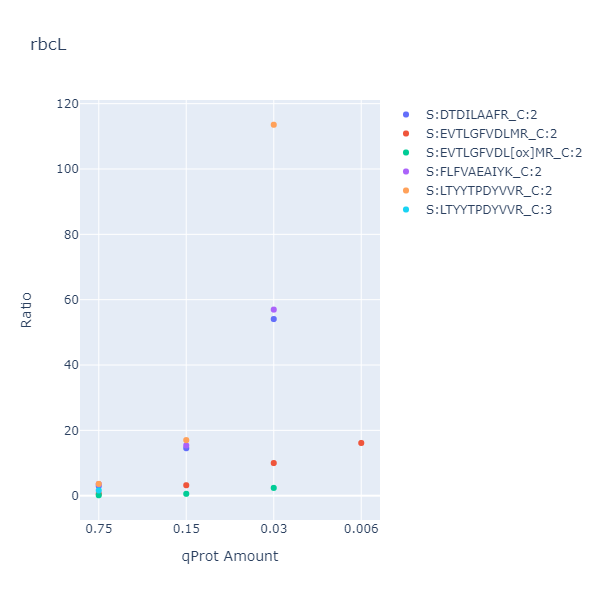

Jonathan Ott, Kevin Frey ~ last updated: 2022-04-25
In this blogpost I will deal with the question how computational data analysis could look like in a reproducible environment. You can read more about FAIR data and the important concepts on the DataPLANT website. DataPLANT's research data management is built around the ARC (Annotated Research Context), a folder and file structure to not only annotate research data but also to store and share it. Workflows and Runs also refer to computational data analysis done on the produced data. It is important that not only laboratory experiments are reproducible, but also the data analysis is repeatable. Therefore, i propose using Visual Studio Code Remote-Containers for scripting in an ARC environment. This VS Code extensions allows us to connect with our personal VS Code instance to a VS Code Server instance inside a docker container. Inside of the docker container runs defined development environment, which allows any user to recreate the environment under which the data analysis was originally performed.
Remote-Containers extension.This blogpost assumes that an ARC was already created (with the ArcCommander) and the data annotated (with Swate). The example ARC I will link for this blogpost was reduced to a minimal version for ease of use.
To use remote containers we need 3 things:
.devcontainer folder with the following files:
.devcontainer/devcontainer.json.devcontainer/settings.vscode.jsonDockerfileFor this example I will use a devcontainer "designed" for an F# development environment. Let's start with a look at the devcontainer.json
|
Here we can specify, which extensions the VS Code Server instance in our docker container should be running. We also reference the dockerfile which should be used to build the container. There we specify that we for example want to use the .NET sdk 6.0.
|
üëÄ If you want to go along the example, you can download the minimal arc (
arc-bio-bte-06-l-7-small.zip) from the CSBlog repository.
assays
- VP21_WC
- dataset
- WCAnnotated_Ratio.txt
isa.assay.xlsx
runs
- VP21_WC
data-analysis.ipynb
analyze.yml
data-analysis.fsx
workflows
- FSharpContainer
Dockerfile
- .devcontainer
- devcontainer.json
- settings.vscode.json
FSharpContainer.cwl
There are more folders and files in there, but let's focus on these for now.
assays\VP21_WC\dataset\WCAnnotated_Ratio.txt is the file that contains the data. It is a tab separated file and contains the 14N/15N ratios (ref) for the proteins of interest.assays\VP21_WC\isa.assay.xlsx contains the metadata information for the experiment. Growthconditions, QconCat proteins, and biological replicates to name a few.runs\VP21_WC\data-analysis.ipynb is the notebook that contains the data analysis. It is a Jupyter Notebook with .NET Kernel and F# code.workflows\FSharpContainer\ contains the information for the VS Code remote container.workflows\FSharpContainer\ folder on root level as workspace in VS Code.>< button and Reopen in container.In an ARC we don't want to have the .devcontainer folder in the root of the project. But instead we want to have it under workflows.
So to start the devcontainer with VS Code we need to open the exact parent folder of .devcontainer folder. In this case arc-bio-bte-06-l-7-small/workflows/FSharpCodeContainer.
This means most files in the mounted volume will not be displayed in the VS Code file explorer.
This issue is also mentioned here.
Open File... .File -> Open Folder... to rescope workspace to base folder.üëÄ If you downloaded the example arc open
runs\VP21_WC\data-analysis.ipynband follow along from there. All content will be the same, but you can run the code in the jupyter notebook.
We start by importing all required nuget packages.
|
The devcontainer has the Office Viewer extension installed so we can open /workspaces/blogpost-playground/arc-bio-bte-06-l-7-small/assays/VP21_WC/isa.assay.xlsx without leaving the VS Code environment!
Some important things to note from the isa.assay.xlsx file.
Cultivation sheet we can see that the experiment used 3 biological replicates.Protein Extraction we can see, that the replicates were split into 4 samples each with different quantities of Q-Protein:
Parameter [15N Calvin-Benson cycle QconCAT mass#3]Parameter [15N Photosynthesis QconCAT mass#4]../../assays/VP21_WC/dataset/WCAnnotated_Ratio.txt.
We start by accessing our data and reading it into an Deedle frame.
[<Literal>]
let dataPath = @"../../assays/VP21_WC/dataset/WCAnnotated_Ratio.txt"
// quality control, check dilution series. In this example mean should always increase by times 5.
type Qprot =
| CBB
| PS
type PeptideIon =
{
ProteinGroup : string
Synonym : string
StringSequence : string
PepSequenceID : int
Charge : int
QProt : Qprot
}
let rowKeyColNames = [|"ProteinGroup"; "StringSequence"; "PepSequenceID"; "Charge"; "Synonym"|]
/// Open .xlsx file and index rows with column information. Then drop those columns
let readQuantAndProtFrame (path: string) =
let frame =
Frame.ReadCsv (path,true,separators="\t")
|> Frame.indexRowsUsing (fun s ->
let pGroup =
s.GetAs<string>("ProteinGroup")
|> String.split ';'
|> Array.sort
|> String.concat ";"
{
ProteinGroup = pGroup
StringSequence = s.GetAs<string>("StringSequence")
PepSequenceID = s.GetAs<int>("PepSequenceID")
Charge = s.GetAs<int>("Charge")
Synonym = s.GetAs<string>("Synonym")
QProt =
match pGroup |> String.contains "QProt_newCBB", pGroup |> String.contains "QProt_newPS" with
| true, false -> CBB
| false, true -> PS
| anythingElse -> failwith $"Error! unexpected input in cbb ps matching: {anythingElse}"
}
)
/// The following works on a mutable frame, so we can drop all columns we don't need without forwarding the frame to the next column to drop.
rowKeyColNames
|> Array.map (fun name ->
frame.DropColumn(name)
)
|> ignore
frame
let data = readQuantAndProtFrame dataPath
Check the current state with:
data
|> Frame.take 10
|> formatAsTable 500

Display the same data as boxplot:
let createBoxPlot f =
f
|> Frame.getNumericCols
|> Series.map (fun k s ->
let x,y =
s
|> Series.values
|> Seq.map (fun values ->
string k, values
)
|> Seq.unzip
Chart.BoxPlot(x, y, Orientation = StyleParam.Orientation.Vertical)
)
|> Series.values
|> Chart.combine
|> Chart.withYAxisStyle("Ratio", MinMax=(0, 100))
|> Chart.withLegend(false)
createBoxPlot data
This plot shows the 15N/14N ratio of all detected Q-Protein peptides.
Next we want to calculate the mean for all peptides over the biological replicates.
We want to access the metadata from assays\VP21_WC\isa.assay.xlsx. We can traverse the annotation tables of the .xlsx file with the ISADotNet library.
let normalizeFileName (f: string) = if Path.HasExtension f then f else Path.ChangeExtension(f, "wiff")
open ISADotNet
open arcIO.NET
let assayFilePath = @"../../assays/VP21_WC/isa.assay.xlsx"
/// Put these functions into a separate code block. Run them once and then work in a new block,
/// to avoid getting an error when you have the .xlsx file open somewhere else
let _,_,_,myAssayFile = XLSX.AssayFile.Assay.fromFile assayFilePath
let inOutMap = ISADotNet.createInOutMap myAssayFile
Because we know we have the sample names in the isa.assay.xlsx files as column headers we can use them to access related metadata information.
/// Get one specific value for an output column
let getColumnParam (sheetName:string) (paramName:string) (fileName: string) =
let fN = fileName |> normalizeFileName
ISADotNet.tryGetParameter // can only get Parameter [xxx]
inOutMap
sheetName // Excel Sheet
paramName // Excel column name in []
fN // last "Sample Name" in assay file, without file extension
myAssayFile
|> Option.defaultValue ""
|> String.split ' '
|> Array.head
|> float
/// The column parameter names in isa.assay.xlsx
let cbc_qconcat = "15N Calvin-Benson cycle QconCAT mass #3"
let ps_qconcat = "15N Photosynthesis QconCAT mass #4"
let getCBC_qconcat sampleName = getColumnParam "Protein extraction" cbc_qconcat sampleName
let getPS_qconcat sampleName = getColumnParam "Protein extraction" ps_qconcat sampleName
/// example access
getColumnParam "Protein extraction" cbc_qconcat "WCGr2_U1" // 0.9
Map over all samples to extract Q-Protein quantities and calculate the mean over all samples with the same quantities (the biological replicates).
let cbc_ps_data =
data
/// col keys as row keys
|> Frame.transpose
/// Adjust keys to represent dilution series.
|> Frame.mapRowKeys (fun rk -> sprintf "cbc: %A" (getCBC_qconcat rk), sprintf "ps: %A" (getPS_qconcat rk), rk)
/// Calculate mean for all rows with the same value in cbc and ps q-protein quantity (aka. the biological replicates)
|> Frame.applyLevel (fun (cbc,ps,_) -> cbc, ps) Stats.mean
/// Swap rows keys back to column keys
|> Frame.transpose
cbc_ps_data
|> formatAsTable 500

Last we want to show only ratios for peptides related to a specific protein.
let plotPeptidesOf (ratios: Frame<PeptideIon,string*string>) (prot: string) =
ratios
/// filter data to only show peptides of the given protein
|> Frame.filterRows (fun k s -> k.Synonym.Contains prot || k.ProteinGroup.Contains prot)
|> Frame.transpose
|> Frame.getNumericCols
|> Series.map (fun pep (values) ->
let qprotAmounts,ratios,fileLabel =
values
|> Series.map (fun dataColumnName ratio ->
let cbc, ps = dataColumnName
let name =
if pep.QProt = CBB then cbc else ps
|> String.split ' '
|> Array.last
name, ratio, name
)
|> Series.values
|> Seq.unzip3
Chart.Point(qprotAmounts, ratios, MultiText = fileLabel)
|> Chart.withTraceName (sprintf "S:%s_C:%i" pep.StringSequence pep.Charge)
|> Chart.withXAxisStyle("qProt Amount")
|> Chart.withYAxisStyle("Ratio")
|> Chart.withTitle (prot)
)
|> Series.values
|> Chart.combine
plotPeptidesOf cbc_ps_data "rbcL"

Thats it for a minimal example on how we can interopt VS Code remote containers and the ARC.
The especially attentive reader might have noticed, that we listed some files under folderstructure, which were not mentioned yet.
workflows\FSharpContainer.cwlruns\VP21_WC\analyze.ymlruns\VP21_WC\data-analysis.fsxA finished ARC will feature a CWL file which is meant to automatically run the complete computational pipeline. Thus, it has a dual function as an indirect annotation of the computational process. A standard CWL file will create a docker container which will run the computational pipeline.
If we manage to create CWL, Dockerfile and VS Code devcontainer in a combined manner to reuse the docker file or even the dockercontainer we would reduce maintenance issues and further generalize the workflow.
So in the future it should be possible to run the CWL pipeline with the same settings as the VS Code remote container.